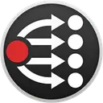
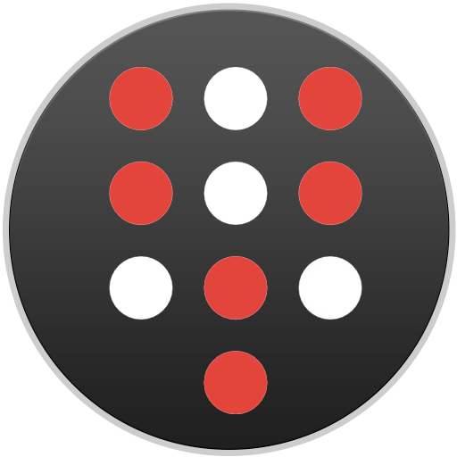
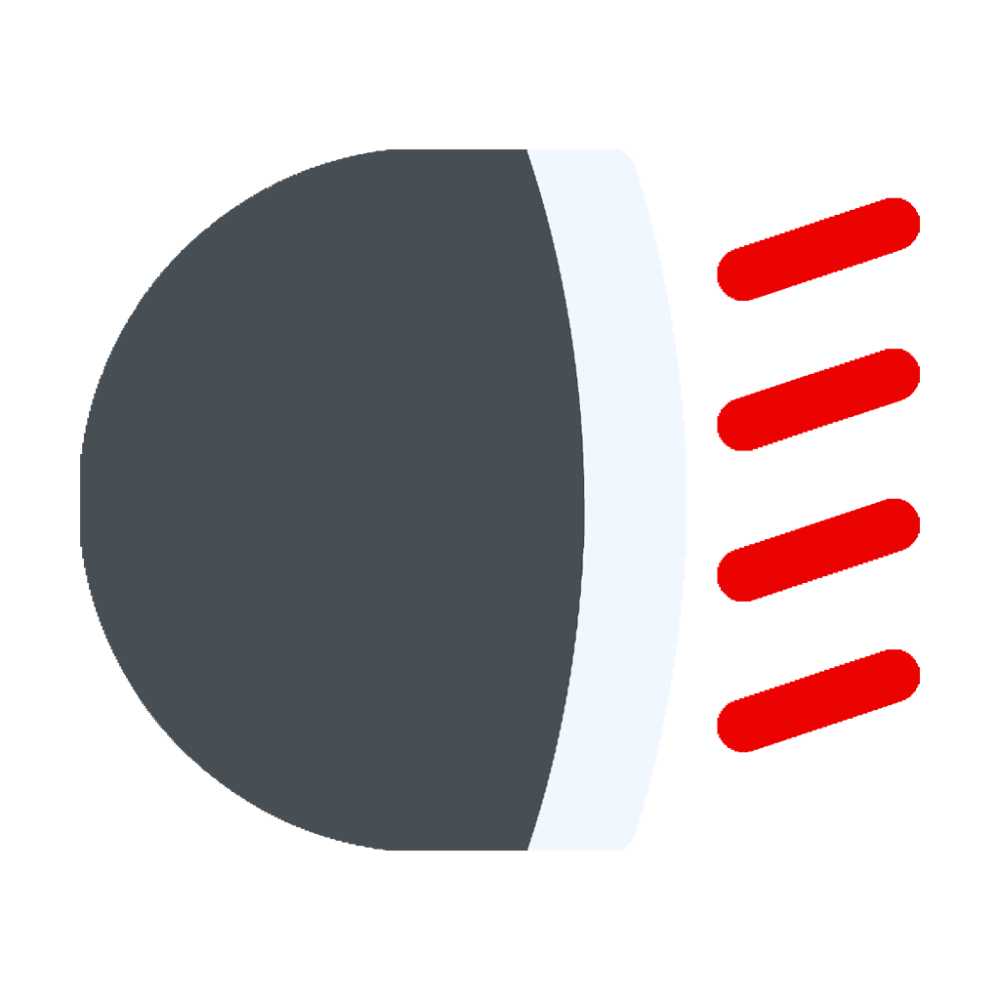

Systems & API integration
Getting separate systems to work together. REST and socket APIs, webhooks, message relays, protocol bridges, and the glue services in between. This is what most clients hire me for, and it’s what I’m best at.
Greenville, SC · Available for consulting
I’m a software engineer and consultant in Greenville, SC. Most of what I do is integration work — getting separate systems, devices, and services to talk to each other reliably, and building whatever has to sit in between. I work full‑time as a network administrator, with over twenty years in broadcast engineering.
What I do
Most engagements start with the first one and pull in the others as needed.
Getting separate systems to work together. REST and socket APIs, webhooks, message relays, protocol bridges, and the glue services in between. This is what most clients hire me for, and it’s what I’m best at.
Node.js and TypeScript services, REST and socket APIs, Electron desktop apps, and internal tools. Written to be handed over: documented, tested, and maintainable by your team after I’m gone.
Signal flow and workflow design for live production, streaming, and control rooms. Vendor‑agnostic recommendations and build‑out planning, based on twenty years of running these rooms.
Client work
The bulk of my work is done for clients and stays private — internal tools, integrations between systems with no off‑the‑shelf connector, and automation for operations teams. Happy to talk through relevant examples on a call.
Two or more systems that need to share data or trigger each other, and nothing on the market connects them.
Software for a specific team and a specific workflow, where an off‑the‑shelf product would be most of the way wrong.
Manual, repeated processes turned into something that runs on its own and tells you when it doesn’t.
Reviewing an architecture, scoping a build, or being the second opinion before a large purchase or migration.
Selected work
Tools I built for my own work and released publicly. Several are in production well beyond my own use, and they are a fair sample of how I write software.
Flagship project
A flexible, vendor‑agnostic camera tally system. It works with the switchers and production software you already own — ATEM, vMix, OBS, Roland, TSL, VideoHub and more — and drives tally to almost any light, device, or screen. No proprietary hardware required.

Core developer team
I sit on the Companion core developer team, helping with project oversight and direction, and I’ve written over 100 modules for it. If you use Companion, there’s a good chance you’re using one of mine.

A virtual on‑screen stream deck for Bitfocus Companion. Create as many decks as you need, each with its own layout, and send button presses to Companion from anywhere on your desktop.
A Raspberry Pi service that receives MIDI over USB and triggers HTTP requests, Companion button presses, or ntfy notifications. It also sends MIDI out on HTTP and socket.io commands. Configured from a web UI.
Runs scripts, and not much else. Use it to automate local tasks, simulate input, manage files, or send system commands from Bitfocus Companion or a custom front end.
Custom control panels for Ross Dashboard: AJA Ki Pro decks, Panasonic PTZ cameras, Blackmagic VideoHub routing, network power outlets, countdown clocks, and a Companion Satellite surface for UltriTouch.

Controls a USB busylight — Luxafor Flag, Thingm blink(1), Kuando Busylight — as a notification device over a REST API or socket.io.
Exposes gamepad events over socket.io so other applications can consume them. Built mainly so an off‑the‑shelf controller can act as a surface for Bitfocus Companion.
Plus ONVIF translation, Cronicle plugins, and a pile of smaller tools — the rest is on GitHub.
About
I’ve worked in broadcast for over twenty years — running technical operations, designing video production and live streaming systems, and writing the software that held them together. These days I work full‑time as a network administrator.
Both jobs are mostly integration. Different systems, different vendors, different protocols, and someone has to make them work as one thing. That’s the work I’ve done for two decades and it’s what I do for clients now.
I write in Node.js and TypeScript, with Python and shell where it fits. I take on consulting and custom development when it’s a good fit for both sides.
— Joseph Adams, Greenville, SC
Contact
The fastest way to start is a short call. Tell me what you’re trying to connect or build, and I’ll tell you whether I’m the right person for it.